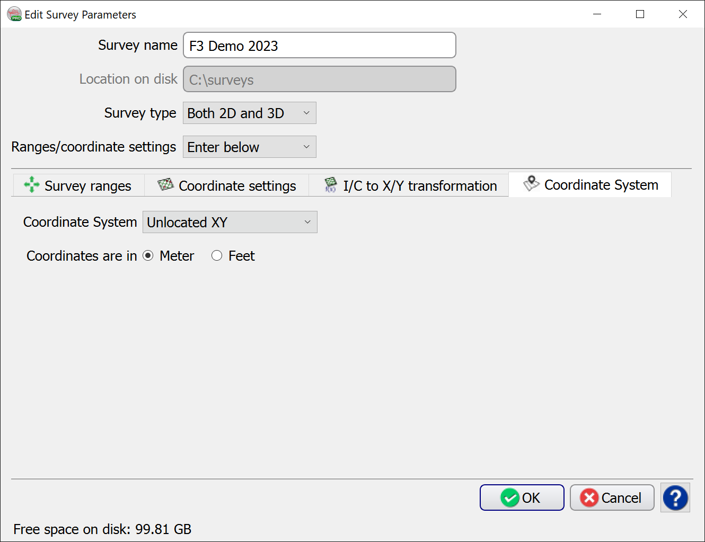
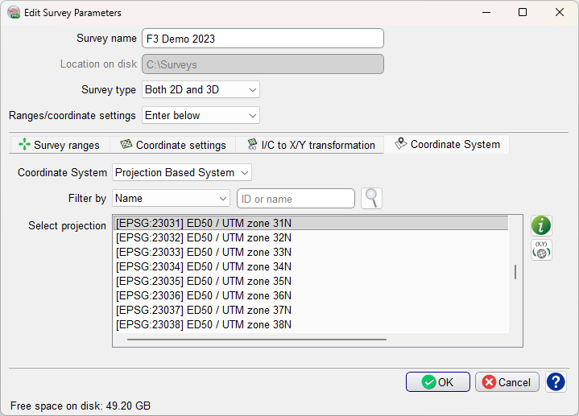
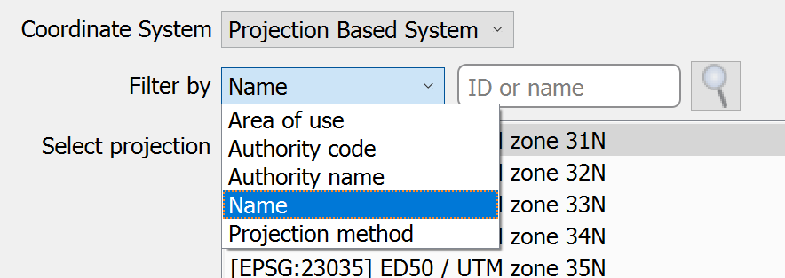
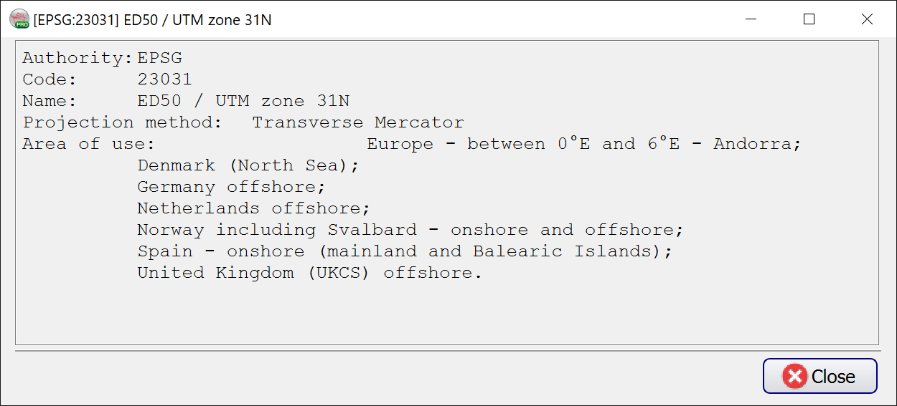

View Details: pops up a dialog with concise information on the selected Projection System:
View Details: pops up a dialog with concise information on the selected Projection System:
OpendTect supports only orthogonal coordinates. The Coordinate System of an OpendTect project can be defined in one of the two ways:
Unlocated XY - spatially unaware, based on the information given via the Coordinate Settings tab, two of which must be on the same inline.

Projection Based System can be selected when a coordinate system is known. The list of projections was created using Proj.4 filter function.

The specific CRS may be searched for using the filter options combined with user input:

For the Projection Based System, two additional options are available:
 View Details: pops up a dialog with concise information on the selected Projection System:
View Details: pops up a dialog with concise information on the selected Projection System:

 Convert Geographical Positions option is available if Project Based System is selected. See the following subsection for details.
Convert Geographical Positions option is available if Project Based System is selected. See the following subsection for details.